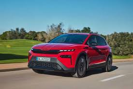

Úplne nová Škoda Elroq je prvým plne elektrickým modelom značky Škoda v strategicky dôležitom segmente kompaktných SUV. Zároveň je to prvý model s novým dizajnovým jazykom Škoda Modern Solid. Ten v sebe spája prepracovanosť, funkčnosť a autentickosť. Model Elroq prichádza s komplexnou ponukou verzií a batérií, ktoré zabezpečujú dojazd viac ako 560 km.